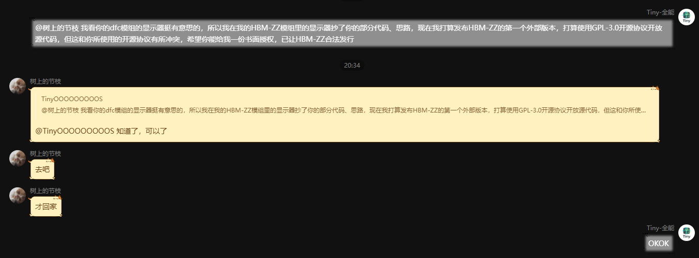

GPL-3.0，而且必须得是它
本模组是自由软件，依据 GNU 通用公共许可证第 3 版（GPL-3.0-only）分发。选 GPL-3.0 不是审美偏好，而是因为取用的上游代码都是 GPL 体系，衍生作品只能继续以 GPL 分发。 本页逐条说明：本项目的许可证、每一部分代码来自谁、节枝的书面授权，以及再分发者要履行的义务。
许可证：GNU General Public License v3.0（GPL-3.0-only）
HBMZZ — HBM's Nuclear Tech 控制台 / 监控屏扩展 Copyright (C) 2026 Yang Sibo (GitHub: ysb-discowave)
全文见仓库根目录 LICENSE （GitHub 镜像），或 gnu.org 上的文本。本页不转载许可证全文。
为什么必须是 GPL-3.0
com.hbmzz.cecp 整个包（含控件、节点系统、编辑器界面、方块与方块实体）是
逐文件移植自 NTM: 诅咒版 的 com.hbm.inventory.control_panel，
而该项目的许可证是 GPL-3.0。附属的节点与控件来自 CE Addon（Leafia），其许可证为
GPL-3.0，部分文件为 LGPL-3.0。
根据 GPL-3.0，衍生作品必须继续以 GPL-3.0 分发：本项目不能改成 MIT / Apache-2.0， 也不能附加「禁止商用」「禁止再分发」之类的额外限制（GPL-3.0 §10）。监控屏的渲染结构取自节枝的 DFC 工具，已取得作者书面授权（见 第 3 节），该授权只做放宽、未追加限制。
你可以做什么
阅读、修改、fork、制作附属、放入整合包、商用、重新发布 jar —— 只要保留版权声明与
LICENSE，并把你的改动同样以 GPL-3.0 公开。装不装 NTM-CE 都能启动；
只有涉及机器交互的功能需要它在运行时存在（反射软依赖，未链接其代码）。
每一部分代码来自谁
下表列出本项目中所有取自上游的代码与素材、其许可证，以及使用位置。逐条依据 NOTICE.md。
| 来源 | 许可证 | 本项目中使用的位置 |
|---|---|---|
| HBM's Nuclear Tech — Community Edition（NTM-CE） Warfactory-Official/Hbm-s-Nuclear-Tech-CE 作者：HBMMods / Drillgon200 / TheOriginalGolem / Alcater / MrNorwood / Movblock / EOS 等 |
GPL-3.0 | com.hbmzz.cecp 全部包（逐文件移植自 com.hbm.inventory.control_panel）：控件、节点系统、编辑器界面、方块与方块实体，以及对应的 OBJ 模型与贴图。 |
| NTM Cursed Addon（CE Addon / Leafia） ntmleafia/NTM-Cursed-Addon 作者：Leafia、movblock 等 |
GPL-3.0 部分 LGPL-3.0 |
com.hbmzz.cecp.nodes.addon（节点）、controls.addon（控件）、controls.configs.addon（配置面板），以及对应的模型、贴图与兼容层。 |
| DFC-Map-Creation-Tool / 节枝特效工具 JiezhiMod 作者：树上的节枝（jiezhi） |
原为自定义「源码可见许可协议 v1.0」（非 OSI 认证）；已取得作者书面授权，可按 GPL-3.0 使用（2026-11-03） | 监控屏的整机 TESR 渲染结构、控制器 + 占位格结构、吊装几何与变换、AWT 离屏画布 → 单纹理 quad 的上传管线。覆盖文件见 第 3 节。 |
本项目自有
以下部分均为本项目实现，不取自任何上游：
com.hbmzz.ctrl（反射桥 + 服务端轮次引擎 + 扁平规则模型）com.hbmzz.item、com.hbmzz.gun、com.hbmzz.entity、com.hbmzz.networkcom.hbmzz.dfc.DFCReader、com.hbmzz.panelclient/screen中的界面绘制（AHBSSMFI-OS 各页面、双环量表、事件日志）HBMZZConfig配置tools/下的全部验证脚本
对上游做过的修改（GPL-3.0 §5(a)）
com.hbm.inventory.control_panel → com.hbmzz.cecp 的移植除了下列改动，逻辑未动：
- 包名：
com.hbm.inventory.control_panel→com.hbmzz.cecp（含子包）。 - 语法降级：Java 9+ 语法（
instanceof模式匹配、switch表达式、var、Optional.isEmpty()、String.isBlank()）改写为 Java 8 等价写法，以便在 Minecraft 1.12.2 / Forge 运行。 - 依赖替换：上游对 NTM 私有渲染 / 缓冲 / 网络类的调用（
NTMBufferBuilder、NTMImmediate、WaveFrontObjectVAO、MainRegistry等）替换为本项目的兼容层com.hbmzz.cecp.compat。 - 跨模组适配：新增
CPMachines/BridgedControllable，使 CE 机器能被面板识别；事件表改为运行时镜像 CE 的ControlEvent.REGISTRY，不再抄写固定名单。 - 界面文本：显示文本英译中。协议字符串一律未翻译（事件名、变量名、NBT 键）。
- 新增功能：附属模组的 14 个节点 + 11 个控件 + 2 个图表节点；
NodeSounder音效表改为按(类名, 字段名)反射解析；NodeBulkQuery改走CPMachines；NodeSounder的doOutput由false改为true（上游返回值在广播链路里会取消接收者，属缺陷）。
第三方书面授权记录
本节是 LICENSE（GPL-3.0）能覆盖全仓库的前提之一，完整记录见仓库根目录 AUTHORIZATION.md。
授权要素
- 授权人：树上的节枝
- 被授权方：Yang Sibo（GitHub: ysb-discowave），HBMZZ 项目
- 时间：2026-11-03 20:34
- 渠道：B 站私信
- 范围：本项目从 JiezhiMod 取用的部分可按 GPL-3.0 使用、修改与再分发
节枝原协议的 §4.3（禁止二次分发 jar）、§4.5（禁止商业用途）与 GPL-3.0 直接冲突， 该冲突已通过本次书面同意解决。
对话原文
Tiny·全能（本项目作者） 20:34 @树上的节枝 我看你的 dfc 模组的显示器挺有意思的，所以我在我的 HBM-ZZ 模组里的显示器抄了你的部分代码、思路，现在我打算发布 HBM-ZZ 的第一个外部版本，打算使用 GPL-3.0 开源协议开放源代码， 但这和你所使用的开源协议有所冲突，希望你能给我一份书面授权， 已让 HBM-ZZ 合法发行 树上的节枝 （引用上条消息）知道了，可以了 树上的节枝 去吧 树上的节枝 才回家
最后一句「才回家」与授权无关，如实列出，不作解释。
授权截图（存档）

docs/authorization/2026-11-03-jiezhi-bilibili-pm.png。授权覆盖的 8 个文件
即 NOTICE.md 第 2 节「JiezhiMod」一行所列，全部为渲染结构与管线思路，不含屏上界面：
client/RenderDFCMonitor—— 整机 TESR 渲染结构、吊装几何与变换client/ConsoleModel—— 整机 TESR 渲染结构（空模型外壳）block/BlockDFCMonitor—— 控制器 + 占位格结构block/BlockDFCMonitorPart—— 控制器 + 占位格结构（占位块）tile/TileEntityDFCMonitor—— 控制器 + 占位格结构（方块实体）dfc/ConsoleRig—— 控制器 + 占位格结构、吊装几何与变换client/RenderFallenScreen—— 坠落 / 摆动动画client/screen/TerminalCanvas—— AWT 离屏画布 → 单纹理 quad 上传管线
明确不在此授权内的部分
- JiezhiMod 的界面设计、配色、页面布局：本项目未取用，屏上 AHBSSMFI-OS 的页面、双环量表、七路灯柱、MIMIC 结构图、事件日志全部为本项目自写。
- JiezhiMod 的素材文件（贴图、模型、音效）：本项目未取用。
- JiezhiMod 的其余代码：本项目未取用。
结论
- 本仓库可以整体按 GPL-3.0 发布，
LICENSE的效力覆盖全部文件。 - 该授权只做放宽，未对下游追加任何限制，符合 GPL-3.0 §7（不存在附加限制）。
- 从本项目 fork 后发布的人不需要再单独向节枝申请授权；但
AUTHORIZATION.md与本页必须保留，否则授权链的书面证据就断了。
分发源码或 jar 时你要做什么
依据 NOTICE.md 第 4 节。分发本项目的源码或 jar（包括改过的版本）时：
- 保留
LICENSE、NOTICE.md与AUTHORIZATION.md，保留源码中的版权声明。AUTHORIZATION.md是节枝授权的书面证据，删掉它，授权链就断了。 - 以 GPL-3.0 分发，不得追加「禁止商用」「禁止再分发」「必须授权」等额外限制。
- 修改过的话，在显眼位置说明改了什么、什么时候改的（§5(a)）。
- 提供对应源码（§6）。从本仓库 fork 后发布二进制，指向你自己的仓库即可。
- 保留 README「署名」一节里对树上的节枝的署名（这既是授权的条件，也是事实）。
最关键的一条：第 2 条。GPL-3.0 不允许追加任何「禁止商用」「禁止再分发」之类的额外限制（§10）。 任何此类附加条款在法律上无效，且会导致你失去依 GPL-3.0 再分发的资格。
致谢
树上的节枝
DFC-Map-Creation-Tool（JiezhiMod）作者。监控屏的渲染结构与画布上传管线取自该项目，已取得其书面授权按 GPL-3.0 使用。
屏上 AHBSSMFI-OS 的界面与 1.6.0 起的视觉体系（琥珀磷光工业色、双环量表、七路灯柱、MIMIC 结构图）均为本项目自有实现，与 JiezhiMod 的界面无关。
NTM:CE 的作者们
com.hbmzz.cecp 整包逐文件移植自 NTM: 诅咒版，版权归其作者所有。
HBMMods / Drillgon200 / TheOriginalGolem / Alcater / MrNorwood / Movblock / EOS 等，完整名单见其 mcmod.info。
Leafia / movblock
CE Addon（NTM Cursed Addon）作者，提供了附属的节点与控件（GPL-3.0 / 部分 LGPL-3.0）。
免责声明：本项目不是 NTM / NTM-CE / CE Addon 的官方作品，也未获得其作者背书。装不装它们都能启动，但涉及机器交互的功能需要 NTM-CE 在运行时存在（反射软依赖，未链接其代码）。NTM-CE 与 CE Addon 的名称、图标归各自作者所有，本项目未使用其图标作为自己的图标。